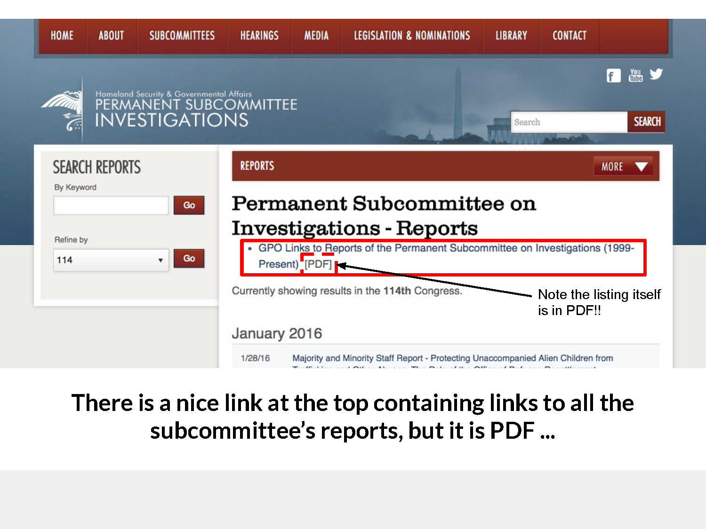
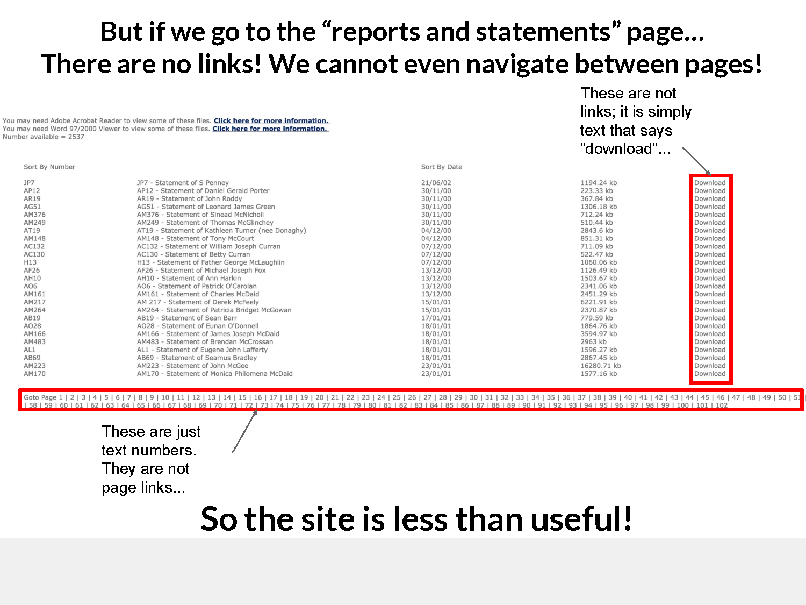

Governments publish deep, authoritative reports. Yet readers still face broken websites, fragmented downloads, and near-impossible citation. Reports that Matter rebuilds them for real use.
Search, browse, and cite a public report in the same way you read an article — by passage, not by PDF volume.
One of the most cited reports in post-2008 journalism is still hidden behind committee pages and PDF listings with unreliable links.

The inquiry has a site, but navigation breaks down: plain text links, fragmented downloads, and email-only alternatives.

Important reports exist, then decay. Links rot. Formats become brittle. Discoverability collapses. The web is built for sharing and searching; these reports are published as if the web did not exist.
Inquiry reports contain evidence, testimony, timelines, and findings that anchor public understanding. When access is poor, public discourse becomes thinner and less accountable.
We focus on English-language reports from the UK and US. Independent, public-interest project. No marketing spin — just better access.